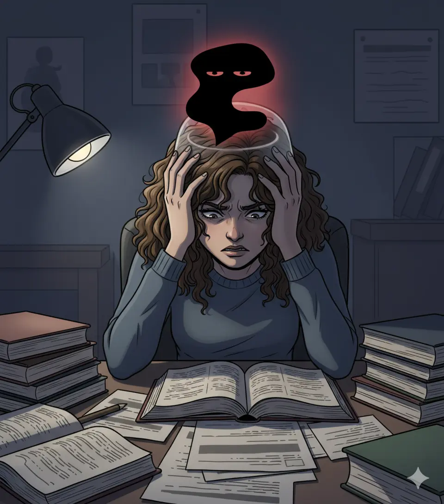
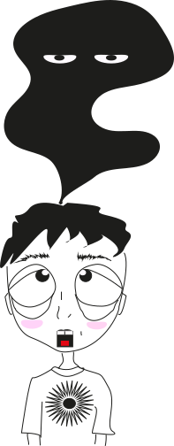
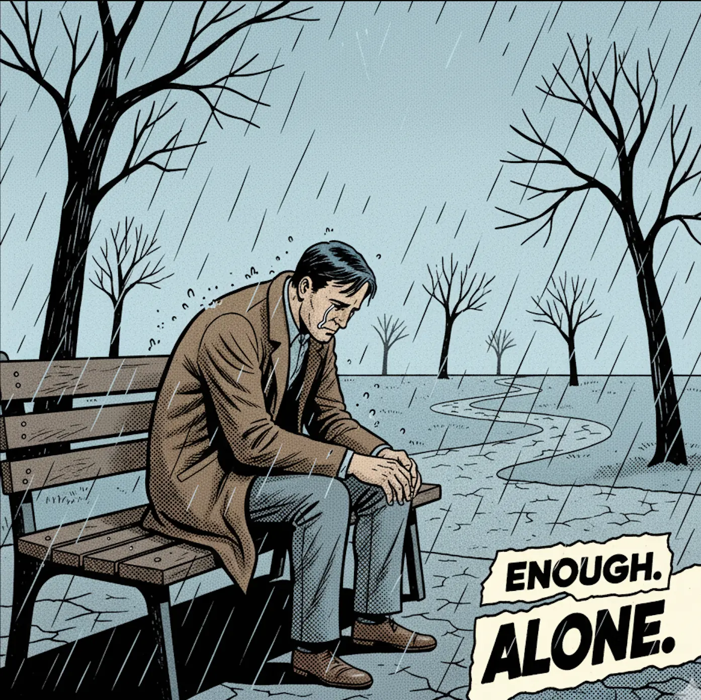
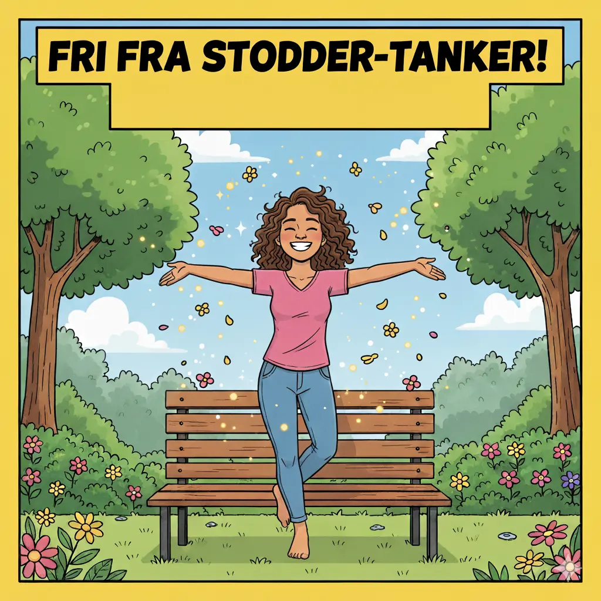
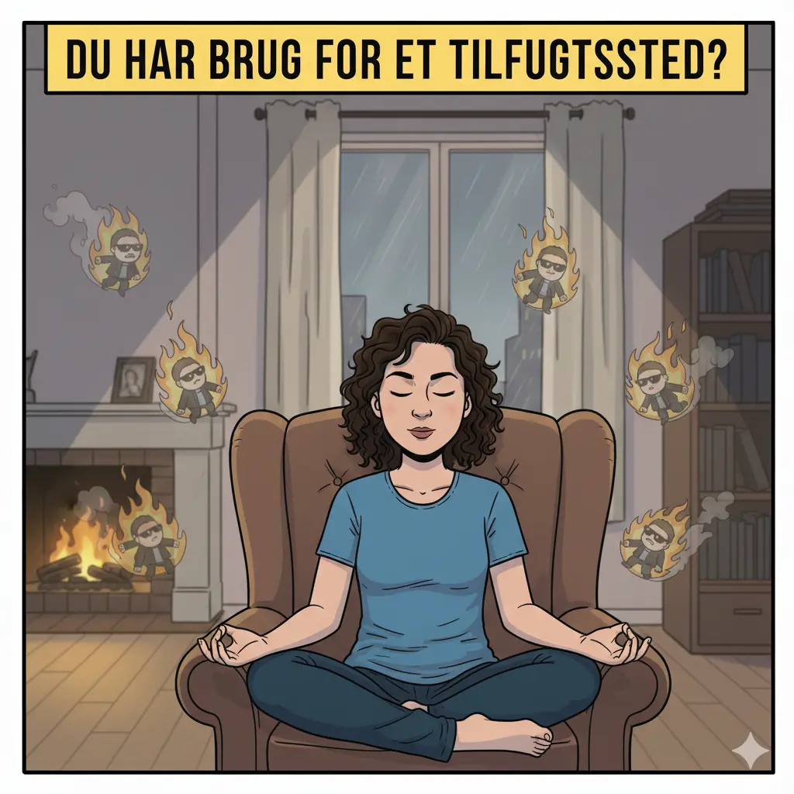

Kan man tale til sin indre kritiker?
Mange oplever at have en indre stemme der kritiserer dem. Denne,...
Se mere

Mange oplever at have en indre stemme der kritiserer dem. Denne,...
Se mere
Den indre kritiker kan opstå af forskellige årsager, såsom meget stres,...
Se mere
Vi har alle oplevet følelsen af at være fanget i vores eget sind. Den indre kritiker, "stodder-tanken", kan føles som en skygge, der følger os, hvisker tvivl og forhindrer os i at opleve øjeblikkets rene glæde. Men hvad sker der, når denne skygge forsvinder? Hvad er livet, når sindet endelig finder sin rytme, og man kan stå frem i verden, glad og utvungen? Dette er øjeblikket af mental lettelse – en tilstand, hvor vi ikke længere kæmper mod vores tanker, men lader os styre af vores autentiske selv. I. At Slippe Ankeret af Tvivl
Stodder-tankerne fungerer ofte som et psykologisk anker. De holder os fast, selv når vi har lyst til at sejle ud. De består typisk af "burde", "skulle" og "hvis nu": • "Du burde arbejde hårdere." • "Du skulle ikke have sagt det." • "Hvis nu det går galt..."
Når vi slipper disse ankre, sker der en transformation. Det er ikke, fordi vi pludselig bliver perfekte eller fejlfri; det er, fordi vi ophører med at identificere os med den negative stemme. Vi genkender den som støj i systemet, ikke som sandheden om vores identitet. Fra Kamp til Akcept Vejen til denne frihed starter sjældent med en direkte kamp. Jo hårdere vi forsøger at skubbe en tanke væk ("Jeg må ikke tænke på X"), jo stærkere kommer den tilbage. Den sande frihed opstår gennem mental accept. 1. Anerkendelse: "Jeg bemærker, at jeg har en tanke om, at jeg ikke er god nok." 2. Defusion: "Denne tanke er bare ord i mit hoved, ikke en kendsgerning." 3. Handling: "Hvad er det, jeg værdsætter i dette øjeblik? Hvad vil jeg foretage mig, uanset hvad tanken siger?"Ved at tage magten fra tanken og lægge den i vores handlinger, skaber vi rum for glæde og spontanitet. II. Den Autentiske Rytme: Sind og Krop i Harmoni Forestil dig et øjeblik, hvor du står og danser frit. Du tænker ikke på, hvordan du ser ud, hvilke skridt du skal tage, eller hvad andre tænker. Du er i flow. Dette fysiske udtryk er en perfekt metafor for mental frihed. 1. Kropsglæden Den glade, dansende krop er et direkte resultat af et lettet sind. Bevægelse, især spontan bevægelse, er en af de hurtigste veje ud af hovedet og ind i nuet. Når vi danser eller bevæger os frit, ophører den kritiske hjerne med at dominere. Vi lytter til kroppens impulser, hvilket er et af de mest autentiske udtryk for vores indre jeg.
Dette er den modsatte pol af den stivhed, som tvivl og frygt skaber. 2. Neurobiologien i Frihed Når vi oplever glæde og lettelse, frigives neurotransmittere som dopamin (belønning, motivation) og serotonin (velvære, lykke). Ved at engagere os i aktiviteter, der skaber flow og fravær af kritik – såsom dans, kreativitet eller fordybelse – skaber vi nye neuronale stier, der styrker vores evne til at opleve positivitet og modstandsdygtighed. III. At Leve Uden Filter Et liv frit for stodder-tanker er et liv levet uden et konstant filter af selvkritik. Det betyder ikke, at vi aldrig oplever sorg eller udfordringer, men at disse følelser kan passere igennem os uden at hænge fast og forvrænge hele vores perspektiv. • Valgfrihed: Vi handler ud fra vores værdier i stedet for vores frygt. Vi vælger at følge en passion, selvom stodder-tanken kalder det en dårlig idé. • Nærvær: Vi kan værdsætte de små ting – smagen af kaffe, solskin på huden, et smil fra en fremmed – fordi sindet ikke er optaget af at analysere fortiden eller planlægge frygtscenarier for fremtiden. Vejen til den Dansende Frihed er en daglig øvelse i at minde sig selv om: • Du er ikke din tvivl. • Du er fri til at handle, uanset hvad den indre stemme siger. • Livet er ment til at blive oplevet, ikke mentalt dissekeret. Ved at dyrke mental accept og nærvær, kan vi alle finde vores egen indre rytme og danse mod en gladere og mere autentisk tilværelse.
En Guide til Styrket Sind og Kropsforbindelse I en verden, der konstant kræver vores opmærksomhed – fra notifikationer til deadlines – er det let at overse vores indre landskab. Vi dyrker vores fysik i fitnesscentre, plejer vores kost for bedre helbred, men hvor ofte dyrker vi egentlig vores mentale velbefindende? At "dyrke det mentale" handler om bevidst at pleje sindets styrke, ro og fleksibilitet. Denne praksis er ikke kun relevant for dem, der kæmper med stress, men er en fundamental øvelse for enhver, der ønsker et rigere og mere nærværende liv. Hvad betyder det at "Dyrke det Mentale"? At dyrke det mentale betyder at skabe tid og rum til at observere, forstå og pleje sine tanker, følelser og indre tilstande. Det er en aktiv proces, hvor man træner sindet til at være mindre reaktivt og mere bevidst, ligesom man træner en muskel. Det mentale velvære bygger på flere søjler: 1. Nærvær (Mindfulness): Evnen til at være fuldt til stede i øjeblikket. 2. Modstandskraft (Resiliens): Evnen til at håndtere modgang og komme sig hurtigt. 3. Kognitiv Fleksibilitet: Evnen til at skifte perspektiv og se ting fra forskellige vinkler. 4. Kropsbevidsthed: Forståelsen af, hvordan sindet og kroppen er uadskilleligt forbundet. Yoga: Mere end Strækøvelser Yoga er et glimrende redskab til at dyrke det mentale, netop fordi det forener de fire søjler. Mange ser yoga som en række komplicerede strækøvelser, men kernen i yoga ligger i at bruge kroppen til at fokusere sindet. 1. Bevægelse som Koncentration Når du udfører en yogastilling (asana), kræver det din fulde opmærksomhed at holde balancen og justere kroppen. Dette fokus trækker sindet væk fra bekymringer og fremtidige gøremål. Kroppen bliver dit anker i nuet. Dette kaldes Dharana (koncentration) i yoga-filosofi. 2. Åndedrættet (Pranayama) som Sindets Bro Åndedrættet er den direkte forbindelse mellem det bevidste og det ubevidste sind. Stress og angst manifesterer sig ofte som overfladisk, hurtig vejrtrækning. Gennem Pranayama (åndedrætsøvelser) lærer du bevidst at regulere dit nervesystem. En langsom, dyb udånding signalerer til hjernen, at der er sikkerhed og ro, hvilket øjeblikkeligt dæmper den mentale uro. 3. Kropsbevidsthed (Interoception) Ved at flytte opmærksomheden til, hvordan musklerne strækker, hvordan leddene bevæger sig, og hvor spændinger sidder, udvikler du en stærkere interoception – evnen til at mærke kroppens indre tilstande. Dette gør dig i stand til at opfange tidlige signaler om stress, før det bliver til fuld mental overbelastning. Mindfulness: Træning i Ikke-Dømmende Opmærksomhed Mindfulness er grundlaget for al mental dyrkelse. Det handler ikke om at tømme hovedet for tanker, men om at bemærke tankerne uden at lade sig rive med af dem. 1. Adskillelse fra Tankerne Som beskrevet i artiklen om "Stodder-Tanker", er essensen af mental dyrkelse at skabe afstand til sine tanker. I mindfulness lærer vi, at tanker er mentale hændelser, ikke nødvendigvis sandheder om virkeligheden. Ved regelmæssig træning kan du se dine bekymringer, tvivl og kritik som skyer, der passerer forbi, i stedet for at tro, at du er skyen. 2. Dyrkelse af Pausen Mellem en begivenhed og din reaktion ligger et lille vindue – pausen. Mennesker med et udmærket mentalt helbred har en større "pause". Hvis nogen siger noget irriterende, giver dyrket mental styrke dig mulighed for at vælge dit svar i stedet for automatisk at reagere med vrede eller forsvar. Dette øger din autonomi og dit følelsesmæssige overskud.